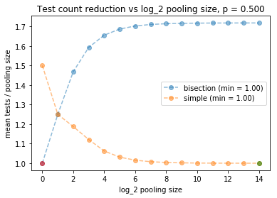
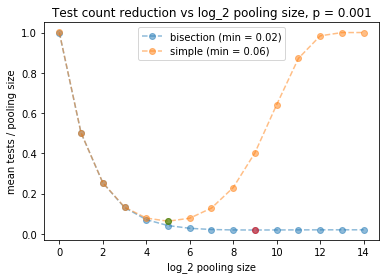

Pooling of test samples can be used to reduce the mean number of test counts required to determine who in a set of subjects carries a disease. E.g., if the blood samples of a set of office workers are combined and tested, and the test comes back negative, then the full office can be ruled out as disease carriers using just a single test (whereas the naive approach would require testing each separately). However, if the test comes back positive, then a refined search through the workers must be carried out to decide which have the disease and which do not.
Here, we consider two methods for refined search when a group is flagged positive, and provide python code that can be used to find the optimal pooling strategy. This depends on the frequency of disease within the testing population, \(p\).
Impact summary of pooling concept:
- If \(p = O(1)\), so that many people have the illness, pooling doesn’t help.
- If \(p = 0.1\), perhaps typical of people being screened with symptoms, we can reduce the test count needed by about \(\sim 0.6\) using pooling, and the two refined search methods we consider perform similarly here.
- If \(p = 0.001\), so that positive cases are rare — perhaps useful for screening an office of workers expected to be healthy, then we can cut the mean test count by a factor of \(50\), and the bisection method for refined search performs best here (details below).
Code for this analysis can be found at our github (link).
COVID19 background, strategies considered here
The idea of pooling is an old one, but I happened on the idea when an article was posted about it to the statistics subreddit this past week (link). There the question was posed what the optimal pooling count would be, motivating this post.
I imagine pooling may be useful for COVID19 under two conditions: (1) situations where testing capactity is the limiting factor (as opposed to speed of diagnosis, say), and (2) Situations where a great many people need to be screened and it is unlikely that any of them have it — e.g., daily tests within a large office buiding.
We consider two pooling methods here: (1) A simple method where if the test on the group comes back positive, we immediately screen each individual. (2) A bisection method, where if a group comes back positive, we split it in two and run the test on each subgroup, repeating from there recursively. E.g., in a group of size 16 with one positive, the recursive approach generates the following set of test subsets (see notebook on our github linked above for code)
seq = generate_random_seq()
test_counts_needed.append(test_count(seq))
total size = 16
[0, 0, 0, 0, 0, 0, 0, 0, 0, 0, 0, 0, 1, 0, 0, 0]
[0, 0, 0, 0, 0, 0, 0, 0]
[0, 0, 0, 0, 1, 0, 0, 0]
[0, 0, 0, 0]
[1, 0, 0, 0]
[1, 0]
[1]
[0]
[0, 0]
Here, the 13th individual had the disease, and the bisection method required a total of 9 tests (one for each row above) to determine the full set of diagnoses. Note that 9 is less than 16, the number needed when we screen everyone from the start.
Our purpose is to provide code and equations that can be used to select from these two methods should anyone want to apply this idea. Caveat: We currently ignore any possibility of error in the tests. This may make the approach invalid for some or all of the current covid19 tests. Error rates should be studied next where appropriate.
Model and results
We posit that we have a pool of
people to be tested. In the first round, we pool all their samples and test the group. If the group comes back positive, we then run one of the refined methods to figure out which people exactly have the illness. Each person is supposed to have a probability \(p\) of having the disease. Below, we ask how to set \(\mathbb{K}\) — which determines the pooling size — so as to minimize the mean number of tests needed divided by \(N\), which can be considered the pooling reduction factor.
The mean number of tests needed from the simple strategy is
The mean number needed in the bisection strategy is
The proof of (\ref{simple_result}) is straightforward and we give an argument for (\ref{bisection_result}) in an appendix. A cell of our notebook checks this and confirms its accuracy.
Using the above results, our code produces plots of the mean number of tests needed to screen a population vs \(\mathbb{K}\). This then finds the optimal number for each type. The plots below give the results for the three \(p\) values noted in the abstract.
-
Case 1: \(p = 0.5\), large fraction of disease carriers. Main result: The pooling strategies both cause the mean number of tests to be larger than if we just screened each individual from the start (seen here because the y-axis values are always bigger than 1). The approach is not useful here. 
-
Case 2: \(p = 0.1\), modest fraction of disease carriers. Main result: The two methods both give comparable benefits. It is optimal to pool using \(\mathbb{K}=2\), which gives groups of \(N = 4\) patients. This cuts the number of needed tests by a factor of \(0.6\).
](./images/pooling_01.png)
-
Case 3: \(p = 0.001\), small fraction of disease carriers. Main result: Bisection wins, the optimal \(\mathbb{K} = 9\) here, which gives a pooling group of size \(512\). We cut the test count needed by a factor of \(50\). Note: We also show here a histogram showing the number of tests needed when we run a simulated system like this. We see that we often only need one test, and there is another peak around \(20\) tests, with a long tail after that. 
](./images/pooling_hist.png)
The code to generate the optimal \(\mathbb{K}\) plots above is given below. This can be used to generate generalized plots like those above for any \(p\). The histogram plot is contained in our github repo, linked in our abstract. Our appendix follows.
import numpy as np
%pylab inline
K = 5
P_POSITIVE = 0.05
def theory_bisection(p=P_POSITIVE, K=K):
count = 1 + 2 * np.sum([2 ** k * (1 - (1 - p) ** (2 ** (K - k))) for k in range(K)] )
return count / 2 ** K
def theory_simple(p=P_POSITIVE, K=K):
n = 2 ** K
p0 = (1 - p) ** n
count = 1 * p0 + (1 + n) * (1 - p0)
return count / n
print 'Bisection: fraction of full testing: %2.2f' % (theory_bisection())
print 'Simple: fraction of full testing: %2.2f' % (theory_simple())
p = 0.1
data = [theory_bisection(p, k) for k in range(15)]
min_index = np.argmin(data)
plot(data, 'o--', label='bisection (min = %2.2f)'%data[min_index], alpha=0.5)
plot(min_index, data[min_index], 'ro',alpha=0.5)
data = [theory_simple(p, k) for k in range(15)]
min_index = np.argmin(data)
plot(data, 'o--', label='simple (min = %2.2f)'%data[min_index],alpha=0.5)
plot(min_index, data[min_index], 'go',alpha=0.5)
plt.legend()
plt.title('Test count reduction vs log_2 pooling size, p = %0.3f' %p)
plt.xlabel('log_2 pooling size')
plt.ylabel('mean tests / pooling size')
Appendix: Derivation of (\ref{bisection_result})
Consider a binary tree with the root node being the initial test. Each node has two children that correspond to the tests of the two subgroups for a given test. We must test these if the parent is positive. Level \(0\) is the initial test and \(k\) rows down we call the level \(k\) of tests. There are total of \(2^k\) posible tests to run at this level, and there are a total of \(\mathbb{K}\) levels.
The number of tests that need to be run at level \(k\) is set by the number of positive tests at level \(k-1\). We have
Averaging this equation gives
The inner factor here is the probability that a given test of the size being considered comes back positive — this has \(N / 2^k = 2^{\mathbb{K} - k}\) people in it. This is the result shown above in (\ref{bisection_result}).
 Jonathan grew up in the midwest and then went to school at Caltech and UCLA. Following this, he did two postdocs, one at UCSB and one at UC Berkeley. His academic research focused primarily on applications of statistical mechanics, but his professional passion has always been in the mastering, development, and practical application of slick math methods/tools. He currently works as a data-scientist at Stitch Fix.
Jonathan grew up in the midwest and then went to school at Caltech and UCLA. Following this, he did two postdocs, one at UCSB and one at UC Berkeley. His academic research focused primarily on applications of statistical mechanics, but his professional passion has always been in the mastering, development, and practical application of slick math methods/tools. He currently works as a data-scientist at Stitch Fix.